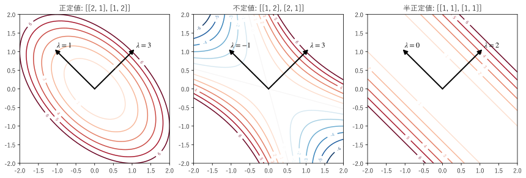

第 11 章 対称行列と二次形式
工学で現れる行列には、対称行列が非常に多い。剛性行列、共分散行列、慣性テンソル、ヘッセ行列などである。対称行列の固有値は必ず実数で、固有ベクトルは互いに直交する。この章では、この性質（スペクトル定理）と、対称行列に対応する二次形式を説明し、正定値性による極値の判定に応用する。
スペクトル定理
\(A^\top = A\) を満たす正方行列を対称行列という（第 3 章）。対称行列には、次の重要な性質がある。
重要
スペクトル定理。\(n\) 次の実対称行列 \(A\) について、次が成り立つ。
固有値はすべて実数である。
異なる固有値に対する固有ベクトルは直交する。
正規直交な固有ベクトルを \(n\) 本選べる。したがって、直交行列 \(Q\) と対角行列 \(\Lambda\) で
\[A = Q \Lambda Q^\top\]と対角化できる。
2 番目の性質は、次のように示せる。\(A\bm{v}_1 = \lambda_1 \bm{v}_1\)、\(A\bm{v}_2 = \lambda_2 \bm{v}_2\)（\(\lambda_1 \ne \lambda_2\)）とすると、\(A^\top = A\) から
なので、\((\lambda_1 - \lambda_2)(\bm{v}_1 \cdot \bm{v}_2) = 0\)、つまり \(\bm{v}_1 \cdot \bm{v}_2 = 0\) である。
一般の行列の対角化 \(A = PDP^{-1}\) では、逆行列 \(P^{-1}\) が必要だった。対称行列では \(P\) を直交行列 \(Q\) に選べるので、\(Q^{-1} = Q^\top\) となり、計算が簡単で数値的にも安定である。\(A = Q \Lambda Q^\top\) を列ごとに書くと
となる。\(\bm{q}_i \bm{q}_i^\top\) は \(\bm{q}_i\) 方向への射影行列（第 9 章）なので、対称行列は「直交する方向への射影を、固有値の重みで足し合わせたもの」である。これをスペクトル分解という。
NumPy では、対称行列の固有値と固有ベクトルを np.linalg.eigh() で求める。np.linalg.eig() より速く、固有値は実数の配列として小さい順に返り、固有ベクトルは正規直交になる。次の行列は、弦の振動や熱伝導の方程式を差分法で離散化したときに現れる行列である。
12def report() -> None:
13 """固有値分解とコレスキー分解の結果を表示する."""
14 a = np.array([[2.0, -1.0, 0.0],
15 [-1.0, 2.0, -1.0],
16 [0.0, -1.0, 2.0]])
17 values, q = np.linalg.eigh(a) # 固有値は小さい順に並ぶ
18 with np.printoptions(precision=4, suppress=True):
19 print("固有値 =", values)
20 print("2 - √2, 2, 2 + √2 =", np.array([2 - np.sqrt(2), 2.0, 2 + np.sqrt(2)]))
21 print("Q =")
22 print(q)
23 print("Q.T @ Q == I:", np.allclose(q.T @ q, np.eye(3)))
24 print("Q Λ Q.T == a:", np.allclose(q @ np.diag(values) @ q.T, a))
25
26 lower = np.linalg.cholesky(a)
27 print("コレスキー分解の L =")
28 print(lower)
29 print("L @ L.T == a:", np.allclose(lower @ lower.T, a))
30
31 indefinite = np.array([[1.0, 2.0],
32 [2.0, 1.0]])
33 print("不定値の行列の固有値 =", np.linalg.eigvalsh(indefinite))
34 try:
35 np.linalg.cholesky(indefinite)
36 except np.linalg.LinAlgError as error:
37 print("不定値の行列のコレスキー分解:", error)
固有値 = [0.5858 2. 3.4142]
2 - √2, 2, 2 + √2 = [0.5858 2. 3.4142]
Q =
[[-0.5 -0.7071 0.5 ]
[-0.7071 0. -0.7071]
[-0.5 0.7071 0.5 ]]
Q.T @ Q == I: True
Q Λ Q.T == a: True
コレスキー分解の L =
[[ 1.4142 0. 0. ]
[-0.7071 1.2247 0. ]
[ 0. -0.8165 1.1547]]
L @ L.T == a: True
不定値の行列の固有値 = [-1. 3.]
不定値の行列のコレスキー分解: Matrix is not positive definite
固有値は \(2 - \sqrt{2}, 2, 2 + \sqrt{2}\) であり、\(Q^\top Q = I\)、\(Q \Lambda Q^\top = A\) が確かめられる。コレスキー分解については後で説明する。
サンプルの全体：ch11_spectral.py
二次形式
対称行列 \(A\) とベクトル \(\bm{x}\) から作られる数
を二次形式という。2 次元では、\(A = \begin{pmatrix} a & b \\ b & c \end{pmatrix}\) に対して \(q(x, y) = ax^2 + 2bxy + cy^2\) であり、すべての項が 2 次の多項式である。逆に、どのような 2 次の同次多項式も、対称行列を使って二次形式で表せる。
二次形式は、エネルギーとしてよく現れる。ばねの弾性エネルギー \(\tfrac{1}{2}\bm{x}^\top K \bm{x}\)（\(K\) は剛性行列）、運動エネルギー \(\tfrac{1}{2}\dot{\bm{x}}^\top M \dot{\bm{x}}\)（\(M\) は質量行列）、回転体の運動エネルギー \(\tfrac{1}{2}\bm{\omega}^\top I \bm{\omega}\)（\(I\) は慣性テンソル）などである。
二次形式の主軸
\(xy\) の項があると、\(q(x, y) = 1\) などの等高線がどのような図形か分かりにくい。スペクトル定理を使って \(A = Q \Lambda Q^\top\) とし、新しい座標 \(\bm{y} = Q^\top \bm{x}\)（固有ベクトルを基底とする座標）を使うと
となり、交差項が消える。\(Q\) は回転（と反射）なので、これは「座標軸を固有ベクトルの方向に回すと、二次形式は 2 乗の和になる」ということである。固有ベクトルの方向を二次形式の主軸という。
図 18 は、3 つの対称行列について、二次形式の等高線と主軸（黒の矢印）を描いたものである。

図 18 二次形式の等高線と主軸。左から正定値、不定値、半正定値
左（固有値 3, 1）：等高線は楕円で、主軸は楕円の長軸と短軸の方向である。\(q = 1\) の楕円の半径は、各主軸の方向に \(1/\sqrt{\lambda_i}\) なので、固有値の小さい方向に長く伸びる。
中（固有値 3, -1）：等高線は双曲線である。固有値が正の方向には値が増え、負の方向には減る。
右（固有値 2, 0）：固有値 0 の方向 \((-1, 1)\) には値が変わらないので、等高線は平行な直線になる。
サンプルの全体：ch11_quadratic_form.py
正定値行列
0 でないすべての \(\bm{x}\) について \(\bm{x}^\top A \bm{x} > 0\) となる対称行列 \(A\) を正定値行列という。主軸の座標では \(q = \sum \lambda_i y_i^2\) なので、次のように分類できる。
分類 |
条件 |
二次形式の形 |
|---|---|---|
正定値 |
固有値がすべて正 |
原点で最小になる「お椀」の形 |
半正定値 |
固有値がすべて 0 以上 |
原点で最小だが、値が変わらない方向がある |
負定値 |
固有値がすべて負 |
原点で最大になる「山」の形 |
不定値 |
正と負の固有値がある |
原点は鞍点（馬の鞍の形） |
\(A^\top A\) の形の行列（第 9 章の正規方程式や、第 14 章の共分散行列）は、\(\bm{x}^\top A^\top A \bm{x} = \|A\bm{x}\|^2 \ge 0\) なので、必ず半正定値であり、\(A\) の列が線形独立なら正定値である。また、構造物の剛性行列が正定値であることは、どのように変形させても弾性エネルギーが正になる、つまり構造物が安定であることを意味する。
コレスキー分解
正定値行列 \(A\) は、下三角行列 \(L\)（対角成分が正）を使って
と分解できる。これをコレスキー分解という。LU 分解の特別な場合で、計算量は LU 分解の約半分である。正定値行列を係数とする連立一次方程式（有限要素法の剛性方程式など）を解くのに使われる。また、コレスキー分解ができるかどうかで、行列が正定値かを判定できる。リスト 43 の実行結果では、正定値の行列ではコレスキー分解ができ、不定値の行列では LinAlgError が送出されている。
多変数関数の極値
二次形式は、多変数関数の極値の判定に使われる。2 変数関数 \(f(x, y)\) が点 \(\bm{a}\) で勾配 0（\(\partial f / \partial x = \partial f / \partial y = 0\)）になるとき、\(\bm{a}\) の近くでのテイラー展開は
となる。\(H\) は 2 階の偏導関数を並べた対称行列で、ヘッセ行列という。\(f\) の点 \(\bm{a}\) の近くでの形は、二次形式 \(\bm{h}^\top H \bm{h}\) で決まるので、次のように判定できる。
\(H\) が正定値なら、\(\bm{a}\) は極小点である。
\(H\) が負定値なら、\(\bm{a}\) は極大点である。
\(H\) が不定値なら、\(\bm{a}\) は鞍点である。
例えば \(f(x, y) = x^2 + xy + y^2\) は、原点で勾配 0 であり、\(H = \begin{pmatrix} 2 & 1 \\ 1 & 2 \end{pmatrix}\) の固有値は 3 と 1（図 18 の左の行列）なので、原点は極小点である。\(n\) 変数でも同じであり、機械学習の損失関数の最小化などの最適化の理論の基礎になっている。
この章のまとめ
実対称行列の固有値は実数で、固有ベクトルは直交し、\(A = Q\Lambda Q^\top\) と直交行列で対角化できる（スペクトル定理）。
対称行列の固有値と固有ベクトルは
np.linalg.eigh()で求める。二次形式 \(\bm{x}^\top A \bm{x}\) は、固有ベクトルの方向（主軸）の座標では 2 乗の和 \(\sum \lambda_i y_i^2\) になる。
固有値がすべて正の対称行列は正定値であり、コレスキー分解 \(A = LL^\top\) ができる。
ヘッセ行列が正定値なら極小、負定値なら極大、不定値なら鞍点である。